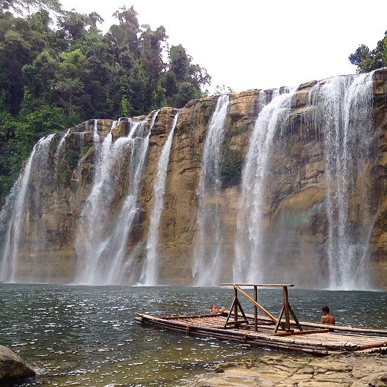
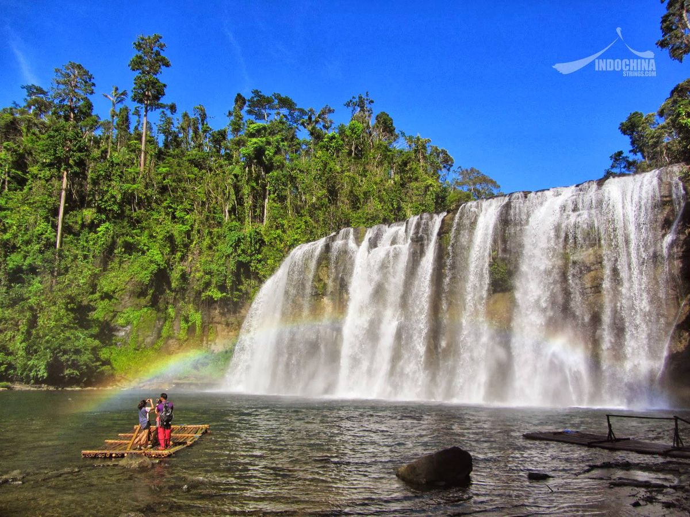
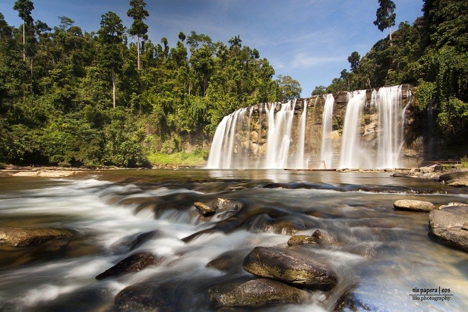

Tinuy-an Falls is a remarkable natural attraction known for its wide and multi-tiered cascade that stretches across a large rock formation. It is often referred to as the “Niagara Falls of the Philippines” because of its curtain-like appearance and strong water flow. The waterfall spans approximately 95 meters in width, making it one of the broadest waterfalls in the country. Surrounding the falls is a dense forest filled with tropical plants that enhance its scenic beauty. The continuous flow of water creates a soothing sound that adds to the relaxing atmosphere of the place.
The environment around the falls is cool and refreshing due to the mist produced by the cascading water. During sunny mornings, rainbows often appear in the mist, creating a magical and picturesque view. The layered structure of the falls allows water to flow smoothly from one level to another. Visitors are often amazed by the combination of natural power and tranquility found in the area. Overall, Tinuy-an Falls offers a perfect blend of beauty, serenity, and adventure.


Tinuy-an Falls is deeply connected to local folklore and the traditions of indigenous communities in the area. According to stories passed down through generations, the name “Tinuy-an” originated from a word that refers to being driven away. This is linked to a legend about early inhabitants who were forced to leave the area due to conflict or external forces. Before it became a tourist destination, the falls served as a natural resource for nearby communities. People relied on it for water and as a place for daily activities such as bathing.
As time passed, the falls gained attention due to its natural beauty and accessibility. Local government units and residents began promoting the site as a tourist destination. Efforts were made to develop basic facilities while preserving the environment. The rise of eco-tourism in Mindanao further increased its popularity among travelers. Today, Tinuy-an Falls is recognized as one of the top natural attractions in Surigao del Sur.
Tinuy-an Falls offers essential amenities that make visits comfortable while maintaining its natural setting. Cottages are available for rent, providing shaded areas where visitors can rest and enjoy meals. Restroom facilities are present to accommodate tourists staying for extended periods. Bamboo rafts are a major feature, allowing visitors to get close to the waterfall safely. Small stalls nearby offer food, drinks, and souvenirs for convenience.
The site also supports a variety of enjoyable activities for visitors of all ages. Swimming in the shallow basin is popular due to the clean and refreshing water. The bamboo raft ride provides an exciting way to experience the falls up close. Visitors can explore the surrounding forest and appreciate its natural beauty. Photography is widely enjoyed because of the scenic views. These activities make the destination both relaxing and adventurous.


Tourists visiting Tinuy-an Falls can enjoy a range of engaging and memorable activities. Riding a bamboo raft toward the waterfall is one of the most exciting experiences available. Swimming in the calm waters at the base of the falls provides a refreshing escape from the heat. The location is also ideal for photography due to its stunning natural backdrop. Early morning visits are recommended to witness rainbows forming in the mist.
Many visitors come in groups to enjoy picnics and social gatherings in the area. The spacious surroundings allow families and friends to relax comfortably. Educational trips are sometimes organized for students studying nature and the environment. Visitors may also explore nearby areas to enhance their experience. The combination of leisure and adventure makes it appealing to different types of tourists. Overall, the activities create a fulfilling and enjoyable visit.
Tinuy-an Falls is located in Barangay Burboanan in Bislig City, making it accessible from various parts of Mindanao. Travelers usually begin their journey by going to Bislig City via bus or private vehicle. The trip offers scenic views of forests and rural landscapes along the way. From the city proper, visitors can hire motorcycle taxis or vans to reach the falls. The road leading to the site is generally passable, though some parts may be slightly rough.
Local transportation options make it easier for tourists to access the destination. Motorcycle taxis are commonly used because they are affordable and can navigate narrow roads. Vans and private vehicles provide a more comfortable option for families and groups. Travel time from Bislig City to the falls usually takes less than an hour. Along the route, visitors can enjoy views of the countryside and local communities. Overall, Tinuy-an Falls is a convenient and worthwhile destination to visit.